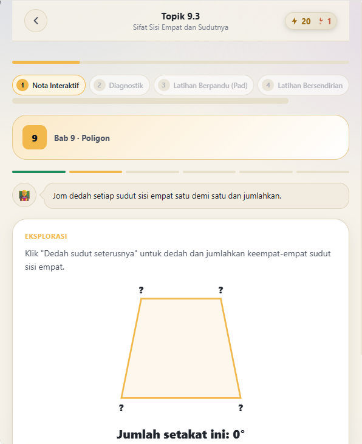
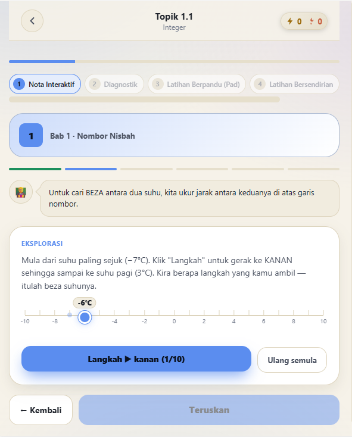
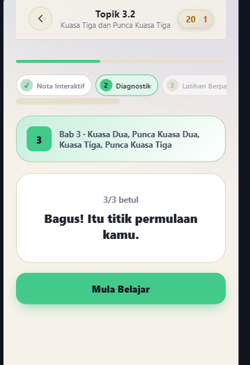
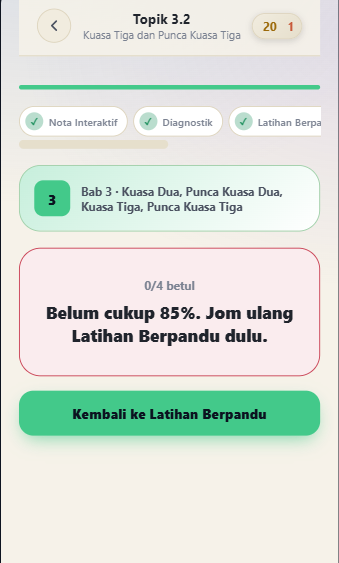

Panduan Matematik KSSM yang Tersusun, Lengkap dan Boleh Dipercayai
Math Mastery menyusun keseluruhan sukatan Matematik KSSM Tingkatan 1 hingga 3 dalam satu laluan pembelajaran yang jelas — nota, diagnostik, latihan berperingkat dan penilaian mastery — supaya anak anda belajar dengan cara yang betul, bukan sekadar menghafal.
Sekali bayar · Sah sepenuhnya mengikut DSKP KSSM · Tiada iklan atau gangguan
Cabaran Sebenar Ibu Bapa Hari Ini
Ramai ibu bapa mahu membantu anak cemerlang dalam Matematik, tetapi menghadapi kekangan yang sama setiap tahun.
Kos tuisyen yang membebankan
Tuisyen persendirian untuk satu subjek boleh mencecah RM100–300 sebulan. Sepanjang tiga tahun (Tingkatan 1–3), jumlah ini menjadi belanja yang besar untuk satu subjek sahaja.
Bantuan tidak tersedia bila diperlukan
Anak sering terkandas semasa mengulang kaji pada waktu malam atau hujung minggu — waktu di mana pusat tuisyen sudah tutup dan ibu bapa sendiri tidak pasti cara mengajar topik tersebut.
Buku rujukan tidak tersusun mengikut kemajuan
Buku rujukan pasaran memberikan nota dan latihan, tetapi tidak memandu anak langkah demi langkah — dari memahami konsep, mengesan kelemahan, sehingga benar-benar menguasai topik tersebut.
Kemajuan sukar dipantau
Ibu bapa selalunya hanya mengetahui kelemahan anak selepas keputusan peperiksaan keluar — sudah terlambat untuk bertindak bagi topik tersebut.
Bagaimana Math Mastery Menyelesaikannya
Satu bayaran, jauh lebih rendah daripada kos tuisyen
Akses penuh tiga Tingkatan dengan sekali bayaran — bukan yuran bulanan yang berterusan.
Sedia 24 jam, terus di dalam telefon anak
Tiada had waktu operasi — anak boleh mengulang kaji bila-bila sahaja topik itu diperlukan, termasuk pada waktu malam.
Laluan pembelajaran berstruktur, bukan sekadar bacaan
Setiap topik melalui lima fasa — dari nota interaktif sehingga penilaian mastery — memastikan konsep benar-benar difahami, bukan dihafal.
Laporan kemajuan yang telus untuk ibu bapa
Pantau sendiri bab mana yang sudah dikuasai dan bab mana yang masih memerlukan perhatian — sebelum peperiksaan, bukan selepasnya.
Satu Laluan Pembelajaran yang Lengkap
Setiap topik dalam Math Mastery mengikut turutan yang sama, disusun untuk memastikan penguasaan sebenar.
Mod Ujian UASA/UPSA
Latihan mengikut format peperiksaan sebenar bagi persediaan UASA dan UPSA.
Sistem Motivasi Berterusan
Reka bentuk yang menggalakkan latihan konsisten setiap hari, bukan sekali sekala menjelang peperiksaan.
Laporan Progress
Ibu bapa boleh menyemak sendiri kemajuan anak bagi setiap bab, bila-bila masa.
Boleh Digunakan Tanpa Internet
Pasang terus ke skrin utama telefon (PWA) — kandungan tetap boleh diakses walaupun tiada sambungan internet.
Disahkan Mengikut DSKP
Setiap kandungan disemak dan disahkan selari dengan dokumen DSKP KSSM Matematik terkini.
Liputan Penuh Tingkatan 1–3
13 + 13 + 9 bab — keseluruhan sukatan tiga Tingkatan dalam satu platform yang sama.
Lihat Sendiri Isi Dalamnya
Macam buku rujukan yang boleh diselak-selak dahulu — ini rupa sebenar aplikasi, terus dari skrin telefon.
Ramai pelajar hilang markah bukan kerana tak pandai, tetapi kerana terpaksa menghafal jalan kerja tanpa benar-benar faham konsepnya. Math Mastery mengatasi masalah ini dengan memandu anak faham konsep dahulu melalui penerokaan sendiri, mengesan bahagian yang masih lemah, kemudian melatih secara berperingkat sehingga benar-benar mahir. Sesuatu topik hanya disahkan "dikuasai" apabila anak boleh menjawab sendiri tanpa bantuan — bukan sekadar selesai membaca nota.








Pelaburan Sekali, Manfaat Tiga Tahun
Kurang daripada kos SATU sesi tuisyen bulanan — dengan akses yang berkekalan sehingga anak bersedia ke Tingkatan 4.
Akses penuh Tingkatan 1, 2 & 3 — satu bayaran, tiada yuran bulanan berulang.
- Keseluruhan nota, latihan & ujian mastery — 13+13+9 bab
- Mod ujian UASA/UPSA
- Laporan kemajuan untuk ibu bapa
- Boleh digunakan pada lebih daripada satu peranti
Bayar dengan selamat secara online (FPX/DuitNow)
Terima kod akses peribadi melalui emel
Masukkan kod dalam aplikasi dan mula belajar
Soalan Lazim
Perlukah sambungan internet untuk menggunakan aplikasi ini?
Selepas dimuatkan buat kali pertama, aplikasi boleh dipasang terus ke skrin utama telefon (PWA) dan digunakan walaupun tanpa internet.
Bolehkah digunakan pada lebih daripada satu peranti?
Ya. Kod akses yang sama boleh dimasukkan pada beberapa peranti — contohnya telefon dan tablet anak.
Sesuai untuk anak Tingkatan berapa?
Tingkatan 1, 2 dan 3 disediakan dalam SATU bundle yang sama — anak terus menggunakan aplikasi yang sama sepanjang tiga tahun, tanpa perlu membeli semula setiap tahun.
Bagaimana cara pembayaran?
Bayaran dibuat secara online dan selamat melalui Online Banking (FPX) atau DuitNow QR. Kod akses akan dihantar ke emel yang didaftarkan sejurus selepas pembayaran berjaya.